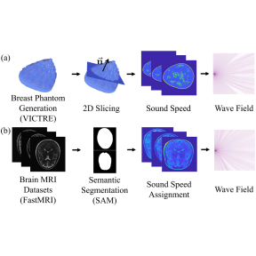
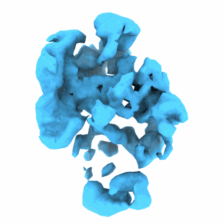
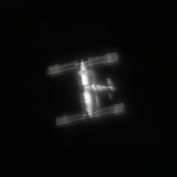
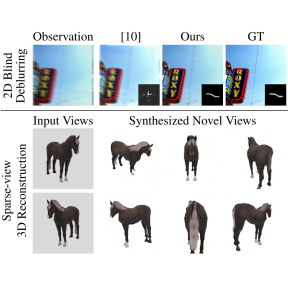

Welcome to PKU Computational Scientific Imaging Group!
Computational Imaging is a vibrant and rapidly growing research area at the intersection of computer
science, physical science, and instrumentation. Our group pioneers the development of advanced
algorithms and innovative hardware to facilitate future scientific imaging at extreme scales. Our
scope of work extends across multiple scientific disciplines, ranging from biomedical imaging to
astronomy. Our research is inherently interdisciplinary and our extensive expertise bridges optics,
deep learning, computer vision/graphics, statistical inference, and hardware design.
Our group is led by He Sun, Assistant Professor of Biomedical Engineering & Biophysics, and
affiliated with the National Biomedical Imaging Center (NBIC) at Peking University. Please see our
research page for more information or opportunities page for potential research positions.
Project Highlights

Neural Born Series Operator for Biomedical Ultrasound Computed Tomography

Recovering a Molecule’s 3D Dynamics from Liquid-phase Electron Microscopy Movies

Reconstructing Satellites in 3D from Amateur Telescope Images
An Expectation-Maximization Algorithm for Training Clean Diffusion Models from Corrupted Observations

Blind Inversion using Latent Diffusion Priors
News
·Sep 2024
An Expectation-Maximization Algorithm for Training Clean Diffusion Models from Corrupted Observations gets accepted for publication at NeurIPS 2024.
[Paper][Code]
·Aug 2024
Weimin Bai, Zhijun Zeng, Yifei Wang, Siyi Chen attend IMSI Computational Imaging Workshop in Chicago. They give oral presentations onDiffusion Posterior Sampling with Inaccurate Priors or PhysicsandDiffusion Posterior Sampling with Inaccurate Priors or Physics. [Resource]